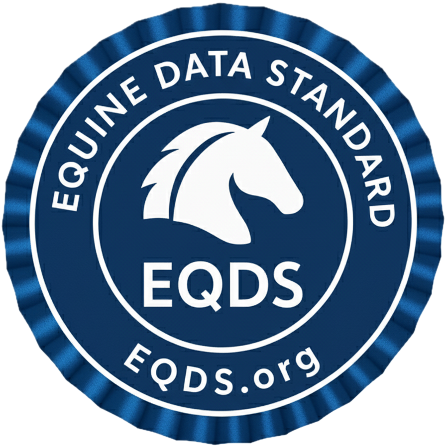

Welcome to EQDS, the international open standard for equine data interoperability
About
EQDS defines FHIR-based profiles, value sets, and exchange rules for:
- Horse identification
- Veterinary records
- Lab results
- Competition/encounter data
Our goal: consistent, interoperable data exchange across the equine industry.
Quick Links
FHIR Resources
Profiles - Core Resources
- Equine Patient - Core equine patient profile
- Equine Observation - Clinical observations, training, and competition data
- Equine Medication Administration - Medications with withdrawal times
- Equine Immunization - Vaccinations and immunizations
- Equine Procedure - Veterinary procedures
- Equine Practitioner - Veterinary practitioners
- Equine Organization - Clinics, facilities, and venues
Code Systems - Terminologies
- Equine Sex - Mare, stallion, gelding, etc.
- Breed Codes - Horse breed classifications
- Color Codes - Coat colors and markings
- Discipline Codes - Equestrian disciplines
- Competition Organizations - FEI, USEF, etc.
- Veterinary Medications - Common equine medications
Extensions - Equine-Specific Data
- Ownership Extension - Track fractional ownership
- Breeding Info Extension - Sire and dam information
- Equine Color Extension - Color and markings
- Withdrawal Time Extension - Competition drug withdrawal
- Next Due Extension - Vaccination schedules
Examples - Implementation Samples
- Patient Example - Complete equine patient record
- Lameness Observation - AAEP lameness grading
- Competition Score - Reining pattern score
- Training Session - Training activity record
- Height Measurement - Body height measurement
- Vaccination Record - Immunization example
- Coggins Test - EIA test result
- Medication Administration - Drug administration with withdrawal